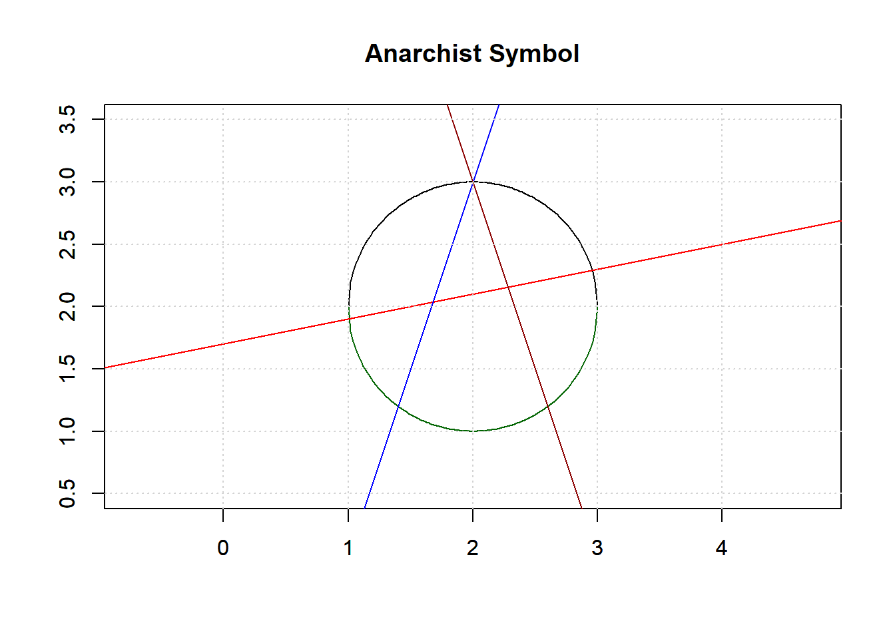
Beginner’s Guide to Git and GitHub
1 Introduction
This guide offers a beginner-friendly overview of Git and GitHub, essential tools for version control and collaboration in data science and software development. It focuses on core concepts, commands, and workflows—especially using RStudio.
1.1 Understanding Git and GitHub
1.1.1 What is Git?
Git is a distributed version control system used to track changes in files and coordinate work across teams. It is especially valuable in software and data science projects where collaboration and version tracking are essential. Git allows you to:
✅ Track changes to code, data, or documentation over time
🔙 Revert to previous versions if something breaks
🌿 Create branches to work on features or experiments independently
👥 Collaborate with others without overwriting each other’s work
Each Git repository contains a full history of changes, allowing users to explore, compare, or restore past versions of a project at any time.
1.1.2 What is GitHub?
GitHub is a cloud-based platform that hosts Git repositories online. It makes it easier to collaborate, share, and manage your code with others. GitHub builds on Git by providing:
☁️ Remote storage for Git repositories, making them accessible from anywhere
🔁 Pull requests, which allow contributors to suggest changes and collaborate through code review
🐛 Issue tracking to manage bugs, feature requests, and tasks
📜 Visual tools to browse commit history, diffs, branches, and contributions
GitHub also integrates with tools like RStudio, making it ideal for data science workflows.
1.1.3 Local vs Remote Repositories
In a Git project, you typically work with two types of repositories:
Local repository:
Stored on your own computer
Where you write code, commit changes, and test new features
Offers full version history without needing an internet connection
Remote repository:
Hosted online, usually on platforms like GitHub, GitLab, or Bitbucket.
Used for collaboration, backup, and sharing your project
Requires git push to upload local changes and git pull to download updates from others
Working with both local and remote repositories allows for flexible development, secure backups, and seamless teamwork.
1.1.4 Setting Up Git in RStudio
Open RStudio and go to Tools > Global Options > Git/SVN.
Ensure Git is installed and RStudio can detect it.
Create a new project with version control: File > New Project > Version Control > Git.
Clone from GitHub or initialize a new repository.
1.1.5 Git Basics and Core Commands
.gitignore
The .gitignore file tells Git which files or directories to ignore. Common entries include:
.Rhistory .RData .DS_Store .log .tmp
Key Git Commands
| Git Command | Meaning | Why It’s Useful |
|---|---|---|
git init |
Start tracking the project with Git | Begin version control |
git status |
Check the status of changes | See staged, unstaged, or untracked files |
git add filename |
Stage a specific file | Prepare a file for committing |
git add . |
Stage all changes in the working directory | Quickly add everything for commit |
git commit -m "message" |
Save a snapshot of changes | Record work into Git history |
git log |
Show commit history | View detailed list of commits |
git log --oneline |
Condensed commit history | View a brief summary of commits |
git branch |
List all branches | Manage and view project branches |
git branch branch_name |
Create a new branch | Work separately without affecting the main |
git switch branch_name |
Switch to another branch | Move between versions |
git switch -c branch_name |
Create and switch to a new branch | Shortcut to save time |
git merge branch_name |
Merge another branch into current | Combine features safely |
git push |
Upload commits to GitHub | Share work online |
git push -u origin main |
Push and track a new branch | Set up branch tracking |
git pull |
Download and merge remote changes | Stay updated with remote |
git tag -a v1.0 -m "message" |
Create an annotated tag | Mark important project points |
git reset --soft HEAD~1 |
Undo last commit but keep changes staged | Correct mistakes without losing work |
git remote add origin url |
Connect local repo to GitHub | Set up a remote repository |
git remote -v |
View remote connections | Confirm remote links |
git remote remove origin |
Remove a GitHub link | Disconnect remote repository |
git branch -d branch_name |
Delete a local branch | Clean up after merging |
git stash |
Temporarily save uncommitted work | Save work without committing |
git stash pop |
Reapply stashed work | Restore work and continue |
git revert commit_id |
Undo a specific commit safely | Safe undo for public history |
git rebase branch_name |
Move branch commits onto another branch | Simplify commit history |
git rebase -i HEAD~n |
Interactive rebase to squash commits | Combine multiple commits into one |
1.1.6 Git Workflow Example (RStudio)
Step-by-Step:
Create a new RStudio Project using Git.
Make changes to a file (e.g., analysis.R).
Use the Git tab in RStudio or run in terminal:
git status git add analysis.R git commit -m “Initial analysis script” git push
Modify file again and repeat add, commit, and push.
Branching
git branch new-feature: Create a new branch
git checkout new-feature: Switch to the branch
git merge new-feature: Merge into main branch
1.1.7 GitHub-Specific Features
Forking
Fork a repository to your GitHub account to work on a copy independently.
Pull Requests
Used to propose changes from a fork or branch into the main repository. Allows for code review and discussion.
GitHub Issues
Used to track bugs, enhancements, and tasks.
README.md and LICENSE
README.md: Overview of the project, setup instructions
LICENSE: Declares the terms under which others can use the code
1.1.8 Best Practices
Write clear, descriptive commit messages (e.g., “Add user authentication logic”)
Add constantly, Commit frequently, and push rarely
Use .gitignore to prevent clutter
Never force push unless absolutely necessary
Use branches for new features or fixes
Document your repository with a README and meaningful comments
2 Assignment 2
2.1 Initialize New RStudio Project
Start by creating a new RStudio project, then add a simple Quarto file (e.g., example.qmd). Knit the file to HTML to ensure everything works correctly. You should see the output rendered in the Viewer pane or in your browser. Something like:
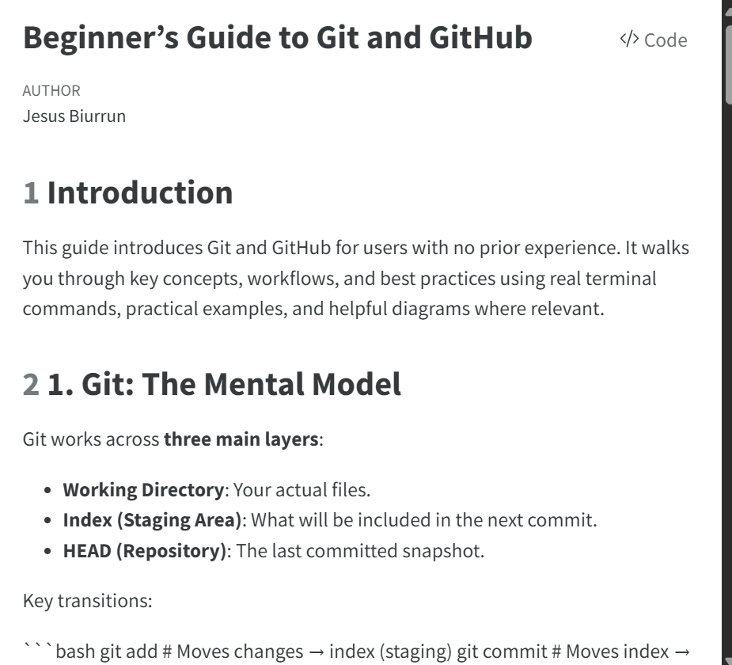
2.2 Initialize Git
To start tracking your project with Git in a local (unconnected) environment, use git init in the terminal to initialize a new Git repository.
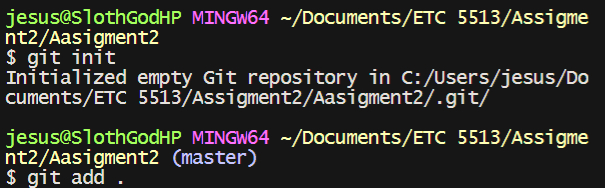
This command initializes a new Git repository locally. It’s the first step in tracking changes, making commits, and later syncing your project with GitHub.
2.3 Stage and Push to GitHub
As shown in the image, we use git add, git commit, and git push to stage and upload our local changes to the remote repository.
git add . — Stages all new and modified files. You can also stage specific files (e.g., git add example.qmd).
git commit -m “message” — Records the staged changes with a short, descriptive message.
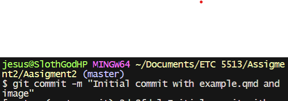 To connect to GitHub, the user adds a remote:
git remote add origin
This will connect us to the remote repository and rename the master branch to main, this last part is not necesary but is easier to keep track this way.
And then we push all committed changes. This will update our remote repository in Git:
git push -u origin main -u establishes an upstream link, so future git push commands don’t need to specify the branch.
2.4 Git Branching Workflow Demonstration
Step 1: To safely develop new features without affecting the main codebase, the user creates a new branch:
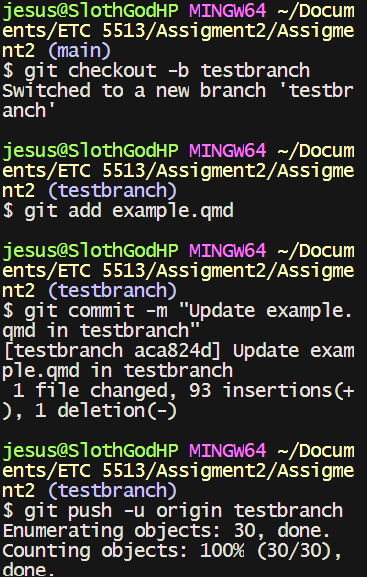
git checkout -b testbranch
The terminal responded:
Switched to a new branch ‘testbranch’
This command both creates and switches to the new branch in one go, making it simpler than using git branch testbranch followed by git switch testbranch.
Step 2: Making and Staging Changes
After editing example.qmd, the user stages and commits:
git add example.qmd
This prepared the changes to be recorded in the version history.
Then, I committed the changes with:
git commit -m “Update example.qmd in testbranch”
Next, I pushed the branch to GitHub:
git push -u origin testbranch
This command does two things: it syncs the branch with GitHub and sets up tracking between my local and remote branches.
The output showed the progress and ended with:
- [new branch] testbranch -> testbranch branch ‘testbranch’ set up to track ‘origin/testbranch’
This meant:
The testbranch was created on the remote repository.
My committed changes were uploaded.
Tracking was set up between the local and remote branches.
Step 3: Checking Status and Adding More Changes
To check work or stage additional changes:
git status
Alternatively, you can check the Git tab in the upper right corner of RStudio, which shows the same information visually.
The output showed two things:
A modified RStudio project file
A new untracked image file (Fig6.png)
To stage everything, I used::
git add . git commit -m “Commit before pushing branch”
And pushed the updates to the remote branch:
git push -u origin testbranch
The output confirmed that all my latest changes were successfully synchronized with GitHub.
Step 4: Switching Back to Main Branch
Once I was done working on testbranch, I switched back to the main branch with:
git switch main
The message: Your branch is ahead of ‘origin/main’ by 1 commit.
This means I have local changes on the main branch that haven’t been pushed to the remote repository yet.
2.5 Add a data Folder and Amend the Previous Commit
The user adds a data folder with relevant files: mkdir data #Copy your Assignment 1 data files into the data folder ls data # Verify files are present Stage the new files
git add data
Amend the previous commit To include these files in the previous commit (instead of creating a new one):
git commit –amend –no-edit This keeps the commit history clean by updating the last commit without changing its message.
Because this rewrites history, a force-push is needed:
You must force push to update remote
git push –force Required because we rewrote commit history
Only safe for personal branches (like testbranch)
Important Notes:
This replaces the previous commit entirely
Never force push to shared branches (main, dev, etc.)
If collaborating, inform teammates after force-pushing
The amended commit will now include both your original changes and the new data folder.
2.6 Create a Merge Conflict and Push Fix
Switch to Main Branch git switch main Switches from testbranch back to the main development branch. The terminal indicates this in blue (NAME OF CURRENT BRANCH). The user modifies the same section of example.qmd that was changed on testbranch. These conflicting edits are committed and pushed:
About this Project This text is DIFFERENT on main!
Commit and Push Main Changes
git add . git commit -m “Conflicting edit on main branch” git push
Records and shares the conflicting changes with the remote repository.
Attempt Merge bash git merge testbranch
The git merge command combines changes from one branch into another. Checks for new commits in the source branch (testbranch) that are not in the target branch (main).
Determines if changes can be merged automatically (fast-forward) or if manual conflict resolution is needed. Automatic Merge (If Possible)
If changes affect different files/lines, Git merges them without conflicts.
If the branches diverged (modified the same part of a file), Git pauses and reports a merge conflict.
Conflict Detection (If Changes Overlap)
When the same part of a file is modified differently in both branches, Git marks the conflict:
Auto-merging example.qmd CONFLICT (content): Merge conflict in example.qmd Automatic merge failed; fix conflicts and then commit the result.
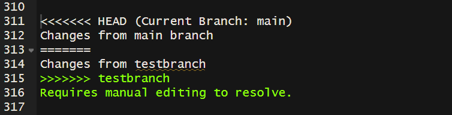 Resolve Conflict Manually The user manually edits the file to resolve the conflict, eliminating all <<<<<<< HEAD and =======/>>>>>>> testbranch sections then finishes the merge:
git add example.qmd git commit -m “Resolve merge conflict between main and testbranch” git push
2.7 Tag the Merged Commit
To create a version tag:
git tag -a v1.0 -m “First stable version after merge” git push origin v1.0
Tags mark release points. Annotated tags (-a) store metadata (author, date, message) and are preferred over lightweight tags. 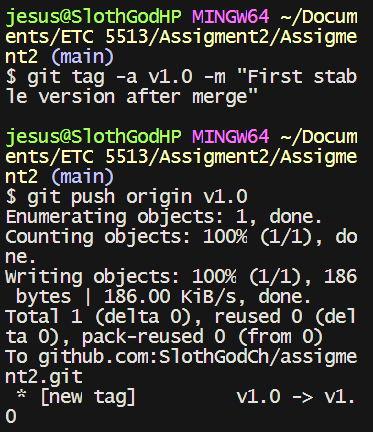
2.8 Delete branch testbranch locally and on the remote.
To clean up after merging:
git branch -d testbranch # Local deletion git push origin –delete testbranch # Remote deletion
We use -d to safely delete the branch only if merged. Use -D to force-delete if necessary (e.g., unmerged changes). 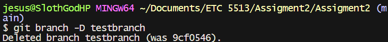 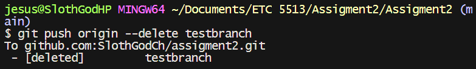
2.9 Display the commit log in a condensed format in the terminal.
To inspect commit history:
git log –oneline –graph –decorate –all
This provides a visual and concise overview of commits and branches.
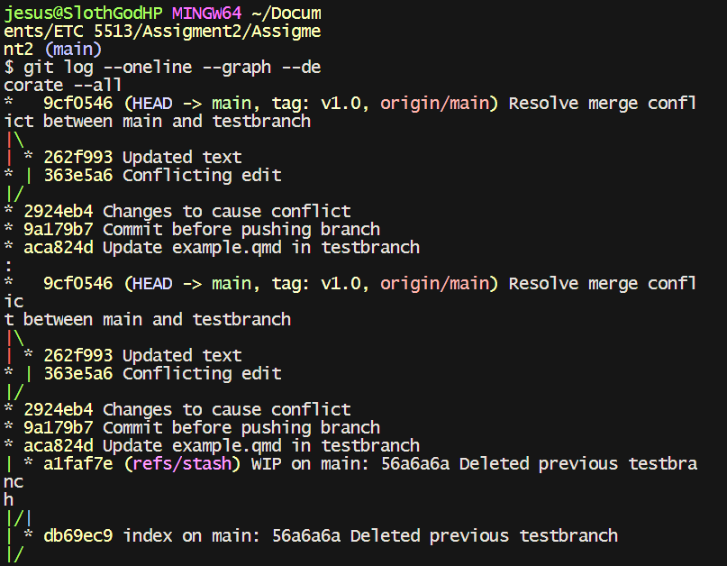 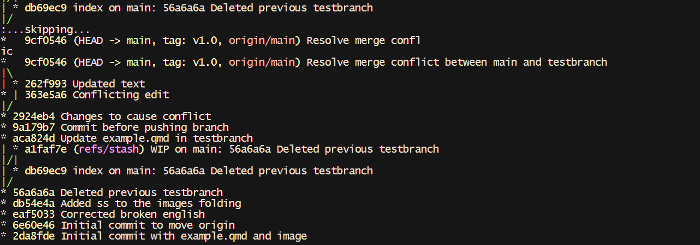 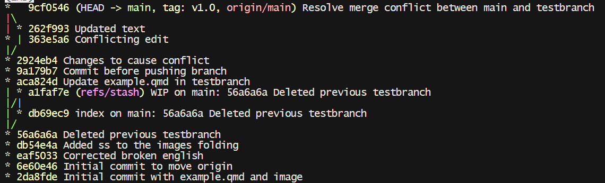 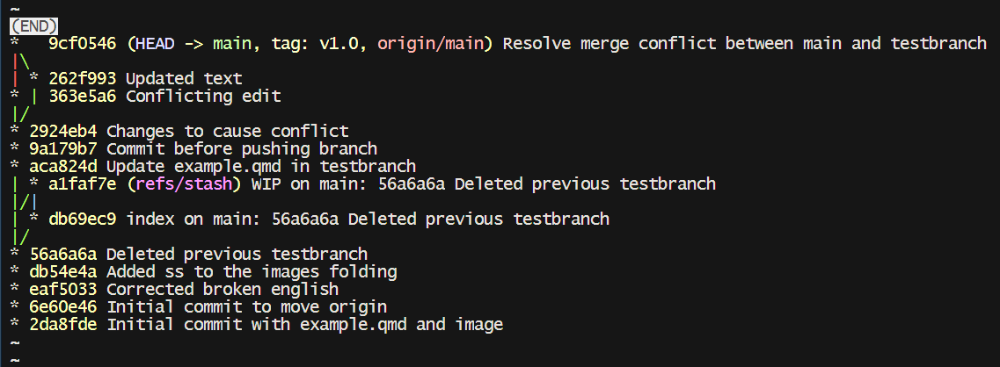
2.10 Undo a Commit (Without Losing Changes)
Simple Semicircle Plot
After adding a new section to example.qmd and committing it:
git add . git commit -m “Add new section 9”
The user realizes they want to undo the commit but keep the changes. They run:
git reset –soft HEAD~1
–soft undoes the commit but preserves staged changes, allowing edits or re-commits.
Alternatives:
–mixed: Unstages changes but keeps them.
–hard: Deletes changes — irreversible without backups.
2.10.1 Story Time (Only included since I know how much you like to see how we overrcomplicate ourselves)
Because I was trying to push onto the class repository instead of a repository I had access to I had a bit of a problem as shown:
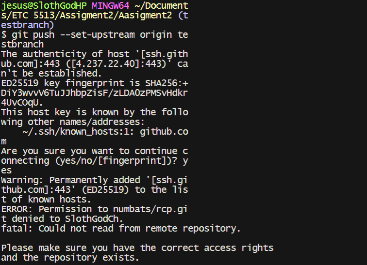 Since I don’t have ownership of the repository, no matter how much I tried to cheat Git, neither of us will succeed. But you’ll still get a good laugh watching me run around like a headless chicken (see git_history.txt). To fix all the ‘fixing’—which included, but wasn’t limited to, modifying my SSH—I created a new repository on GitHub, got the new SSH key, and did the following:
When I first tried to push my local repository to GitHub with the command:
git push –set-upstream origin main
I ran into the following error:
no such identity: /c/Users/jesus/.ssh/id_ed25519: No such file or directory git@ssh.github.com: Permission denied (publickey). fatal: Could not read from remote repository.
This error meant that Git couldn’t find my SSH key at the expected location, so it couldn’t authenticate with GitHub.
To fix this, I removed the existing remote configuration:
git remote remove origin
I did this because the remote configuration might have been incorrect or pointed to the wrong repository.
2.10.2 Configured SSH settings:
If Git can’t authenticate with GitHub due to SSH issues (like “Permission denied (publickey)”), follow these steps:
- Check SSH key setup: Open the SSH config file with:
nano ~/.ssh/config
- Update SSH config: Change the public key to id_rsa like this:
Host github.com
HostName github.com User git IdentityFile ~/.ssh/id_rsa
3.Test connection:
ssh -T git@github.com You should see: Hi SlothGodCh! You’ve successfully authenticated, but GitHub does not provide shell access.
- Fix the remote: Since the previous remote was incorrect, I ran into this issue when pushing:
git push –set-upstream origin main fatal: ‘origin’ does not appear to be a git repository
This happened because I had removed the remote origin earlier, so Git didn’t know where to push my code.
To fix this, I added the correct remote repository:
git remote add origin git@github.com:SlothGodCh/assigment2.git
This command re-established the connection to my GitHub repository using the SSH protocol.
- Push the code: After adding the correct remote, I pushed my code with:
git push -u origin main
The output showed all my files being uploaded and confirmed that the ‘main’ branch was set up correctly:
- [new branch] main -> main branch ‘main’ set up to track ‘origin/main’.
- Verify the successful push: To check everything was synced, I ran:
git status
It showed:
On branch main Your branch is up to date with ‘origin/main’. nothing to commit, working tree clean
And:
git branch
Which displayed:
- main testbranch This confirmed that my local ‘main’ branch was properly connected to the remote repository.
- The Easy Way: Instead of going through all the issues, you could do it the easy way by running:
git init git add . git commit -m “Initial commit: added example.qmd and knitted HTML file” git remote add origin
This setup would connect your local repository to GitHub without the hassle.
2.10.3 Create and Push a New Branch
To do this step I eliminated the previously created (if you followed the part 1 you can skip this section) testbranch and restarted the process
2.10.4 Deleting a Local Git Branch
To permanently delete the local testbranch, I used the force deletion command:
git branch -D testbranch
This successfully removed the branch with the confirmation:
Deleted branch testbranch (was 56e63ab).
The -D flag forces deletion (equivalent to –delete –force)
This only affects the local repository - the remote branch remains unchanged
The hash 56e63ab shows the last commit on the deleted branch
Note: Always ensure you’ve merged or saved needed changes before deletion, especially since this action cannot be undone - all commits exclusive to this branch will be permanently lost unless they exist in another branch or were pushed to a remote.